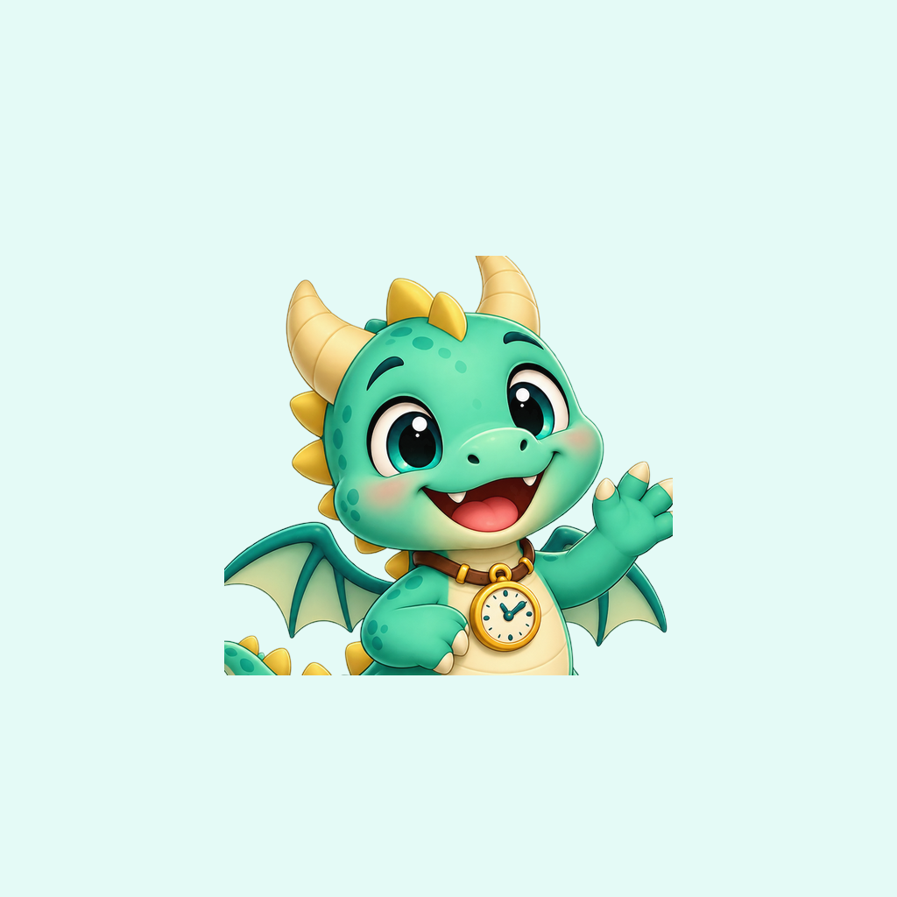

Camp Chair Studios · Apple Watch
LuLu’s Time Check
Help & Support
A little help for learning big things. LuLu’s Time Check makes analog-clock practice and everyday routines fun on Apple Watch.
Frequently asked questions
Does LuLu’s Time Check need an iPhone?
No companion iPhone app is required to use LuLu’s Time Check on Apple Watch. Installation and family-management settings depend on your Apple Watch setup.
How do I enable time-check reminders?
In the Watch app, open the parent-controlled settings, enable hourly checks, and choose active hours. Allow notifications when prompted. Notifications are also affected by watchOS permissions and Focus settings.
What is School Mode?
School Mode hides practice questions during the school days and hours selected by a parent. It does not automatically disable every notification or replace watchOS Schooltime settings.
How do I add or edit a routine?
Open Parent controls with your four-digit PIN, then manage routine entries and their reminder times.
Do I need an account or internet connection?
No account is needed. Clock practice, progress, and routine reminders use local features on Apple Watch.
What if I forget the parent PIN?
Contact support for assistance. Do not erase the Watch or app data as a first troubleshooting step.
Contact support
For bug reports, accessibility requests, or help with LuLu’s Time Check, contact the developer using the Camp Chair Studios website’s contact form.
Contact Camp Chair Studios ↗